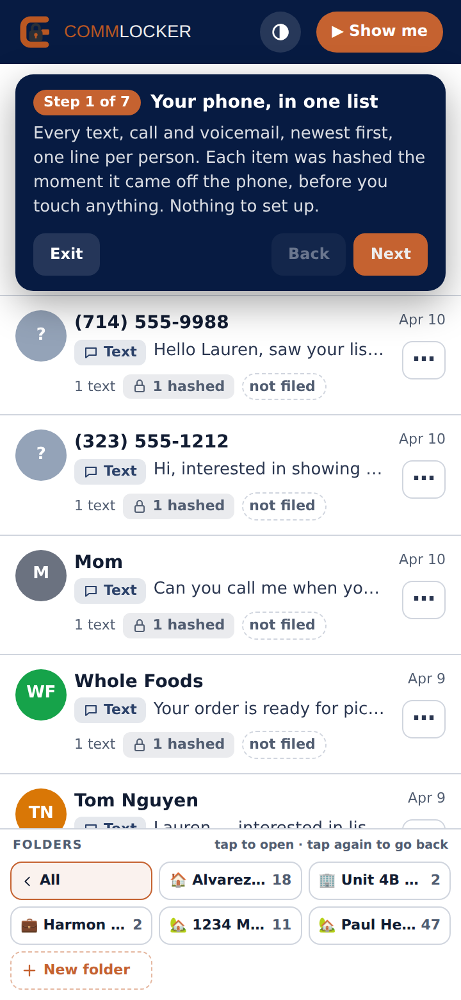
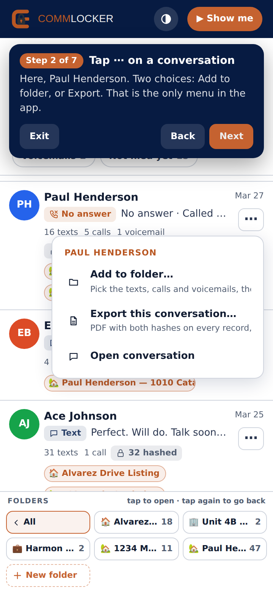
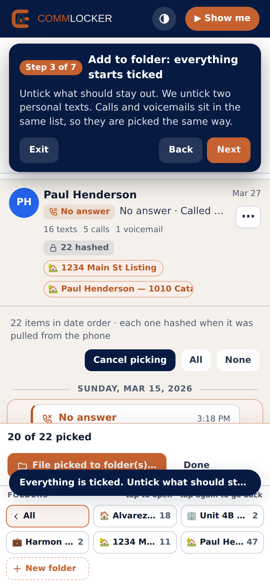
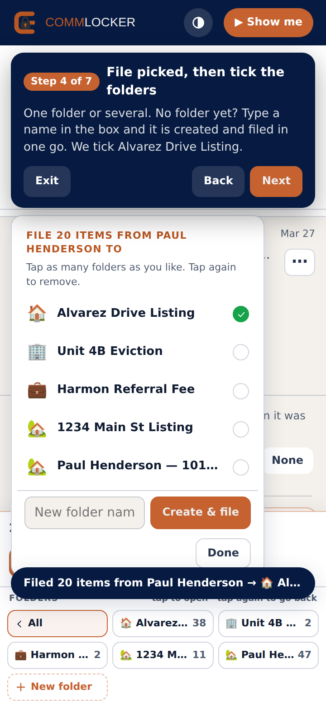
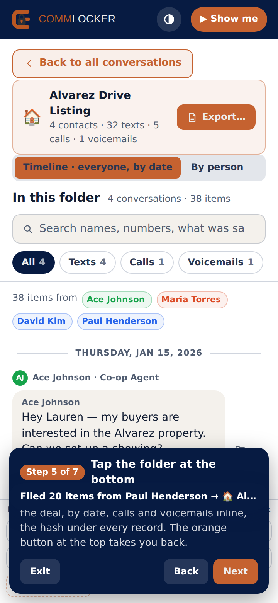
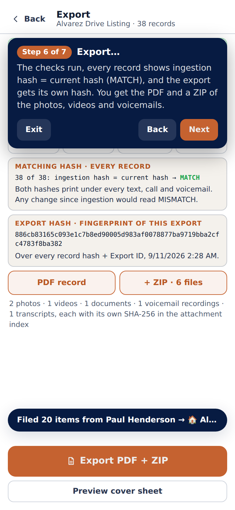
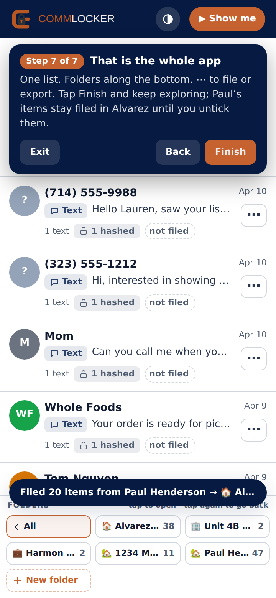

This is the whole app on a portrait phone at a 9:19.5 aspect ratio (720 × 1560 class screens), using the real sample data. Every screen below is a live capture of the mockup at that size, and every one of them, the export page included, fits without scrolling. The same walk-through runs inside the mockup itself: open it and tap Show me.
▶ Open the mockup on your phone
Every text, call and voicemail on the phone, newest first, one line per person. Each line shows the latest item, how many texts, calls and voicemails there are, and which folders it is already in.
The lock chip, for example “22 hashed”, means every item was hashed the moment it came off the phone. That happens before you do anything.

Two choices, and this is the only menu in the app: Add to folder… and Export this conversation…. Nothing else to learn.

The conversation opens with every text, call and voicemail already ticked. You only untick what should stay out. Here two personal texts are unticked; the calls and the voicemail stay in.
The bar at the bottom keeps count, “20 of 22 picked”. All and None are one tap each.

The folder list opens with check marks. Tick one folder or several; the list stays open so the same items can go into two deals. Tap Done when finished.
No folder fits? Type a name in the box and tap Create & file. The folder is made and the picked items are filed in the same move.

Everything filed to Alvarez Drive Listing, from every person, in date order. Texts, calls and voicemails are in one stream, each with who it was with and the hash under it. This is the record you export.
By person shows the same items grouped by contact. The orange Back to all conversations button at the top takes you out, or tap the folder chip again.

Three checks run first: every record verified, every party labeled, exporter identity set. An unlabeled number can be named right there; the carrier number is kept.
Then the proof. Matching hash: every record’s ingestion hash equals its current hash, printed as MATCH under each item in the PDF. Export hash: one fingerprint over the whole export, printed in the chain of custody.

One list. Folders along the bottom. ⋯ to file or export. There is no separate transaction screen, no add-call form, no add-voicemail form, no tab for texts.
| You want to… | Current app | This |
|---|---|---|
| See a deal’s texts, calls and voicemails together | 3 taps + scroll, calls in a separate block | 1 tap on the folder |
| File a conversation, choosing what goes in | 4 taps per message | 4 taps for the whole conversation |
| Record a call or voicemail | 3 taps + 6 or 7 fields | 0, it is already in the list |
| Start a new folder | 6 taps + 3 fields | Type a name, tap Create |
| Export with hashes, plus attachments | 4 taps, PDF only | 1 tap, PDF + ZIP |